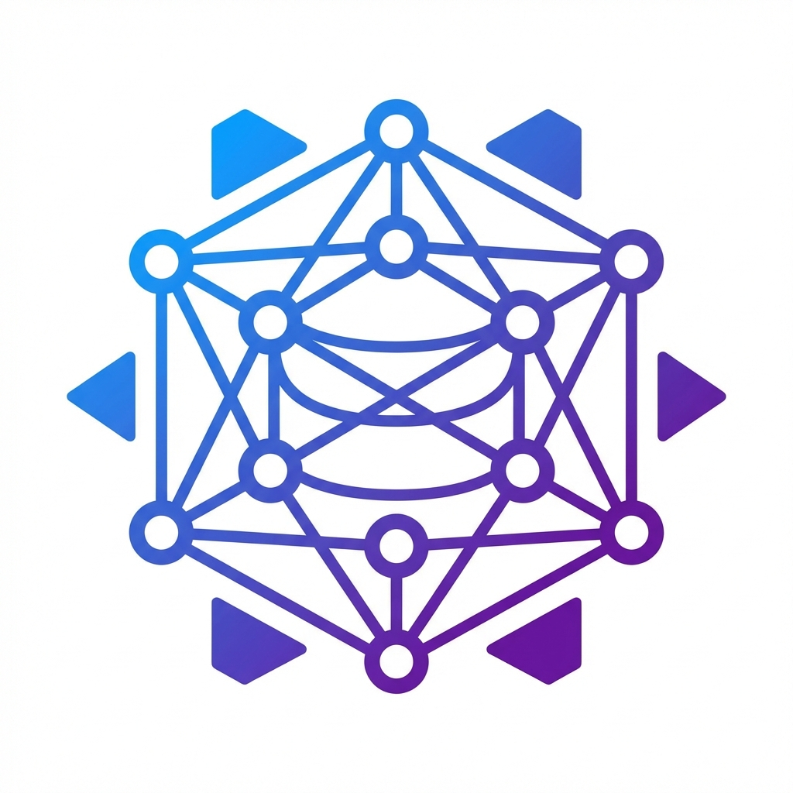

CA' FOSCARI · 2026
Project Proposals
EntglDb & BLite — Open Source Projects
7 projects for Computer Science and Software Engineering students

EntglDb & BLite — Open Source Projects
7 projects for Computer Science and Software Engineering students
B.Sc. in Software Engineering from Alma Mater Studiorum, University of Bologna, 2010.
I work at Zucchetti Hospitality Srl as Tech Leader, guiding developer teams in building embedded solutions for the hospitality industry.
Author and maintainer of EntglDb and BLite.
Contact: lucafabbri84@live.it
P2P synchronization middleware for offline-first applications. Protocol v5, available for .NET 8/10.
The app works without a connection. Data syncs automatically when peers come back online.
Direct device-to-device communication over TCP. Local UDP discovery. No cloud required.
LWW (Last-Write-Wins) and RecursiveMerge for automatic merging of concurrent JSON documents.
ECDH handshake + AES-256, OAuth2 JWT for Cloud Node, Brotli compression.
Embedded BSON database, zero dependencies. Targets: net10.0 + netstandard2.1. Compatible with MAUI, Xamarin, Unity.
BSON parsing with Span<T> stack-only. Zero garbage on query hot path.
B-Tree indexes. Queries with compiled C# predicates. BLQL for string-based queries.
HNSW graph (cosine/euclidean). Geospatial R-Tree. CDC for change streaming.
Goal: Implement EntglDb.Kotlin from scratch, starting from an already-structured Gradle scaffold. Reference: EntglDb.Net v1.0.0.
Modules:
Stack: Kotlin 2.x · JDK 21 · Android API 24+ · Gradle 8 · Protobuf v5
Goal: Extend the conflict resolution system of EntglDb.Net with a three-way merge engine based on JSON Diff/Patch (RFC 6902).
Tasks:
IDocumentMerger with 3-way merge strategyEntglDb.ConflictResolutionStack: C# 13 · .NET 8/10 · xUnit · NuGet packaging
Build a real application (mobile or desktop) that showcases the offline-first capabilities of EntglDb.Net.
Multiple users edit the same list offline. Automatic merge when they meet.
Teachers record classroom attendance offline. Centralized sync via Cloud Node.
Operators in offline areas update stock. Reconciliation upon return.
Technicians fill in offline reports (photos + data). Upload when signal returns.
Goal: Add an audit/observability layer to BLite with zero overhead when disabled (JIT branch elimination).
Components:
IBLiteAuditSink (events), BLiteMetrics (Interlocked counters), BLiteAuditOptionsBLiteDiagnostics (ActivitySource / OpenTelemetry), slow-query detectionCommitTransaction, InsertDataCore, Execute<TResult>Detailed spec in BLite/AUDIT_IMPLEMENTATION.md
Goal: .NET MAUI app with offline semantic search using BLite HNSW + ML.NET + ONNX.
Pipeline:
Stack: .NET MAUI · ML.NET 3.x · ONNX Runtime · BLite NuGet · C# 13
Goal: AI pipeline that extracts structured data from restaurant menus (URL, PDF, photos, free text) and returns normalized JSON.
Pipeline:
{ categories[], items[{ name, price, allergens }] }Domain: Zucchetti Hospitality — real industrial applicability
Goal: Local chatbot that answers questions about a document corpus using the RAG (Retrieval-Augmented Generation) pattern.
Pipeline:
100% offline · no cloud · privacy-preserving · C# 13 · .NET 9/10
Integrate AI agents into your workflow with VS Code + GitHub Copilot or Claude Code. The agent reads the project context in real time and operates directly on the code.
🧠 Architect — Gemini Pro / Claude Opus
🔧 Implementer — Claude Sonnet (complex tasks)
🧱 Brick & Mortar — Gemini Flash / Claude Haiku
Always review the analyses and implementations proposed. AI can appear confident even when wrong: verify the business logic and architectural consistency.
Have the AI generate unit tests with explicit coverage of edge cases. This is one of the use cases where AI performs at its best.
Question every non-obvious solution. Main risk: silently duplicated business logic and cross-module inconsistencies.
AI imitates existing projects: most don't use Clean Architecture or DDD. Actively guide the model towards the correct architectural paradigms.
Detailed specifications for each project are in the projects/ folder of this repository.